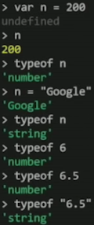
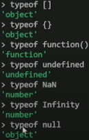
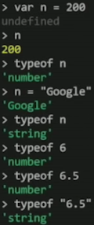
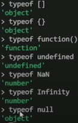

Variáveis
Você usa variáveis como nomes simbólicos para os valores em sua aplicação. O nome das variáveis, chamados de identificadores, obedecem determinadas regras. Um identificador JavaScript deve começar com uma letra, underline (_), ou cifrão ( $ ); os caracteres subsequentes podem também ser números (0-9).
Dica para nomes de variáveis

Typeof
O typeof é uma palavra-chave em JavaScript que retornará o tipo da variável quando você a chama. Você pode usá-la para validar parâmetros de função ou verificar se as variáveis estão definidas. Há outros usos também. O operador typeof é útil porque é uma maneira fácil de verificar o tipo de uma variável em seu código.
 


